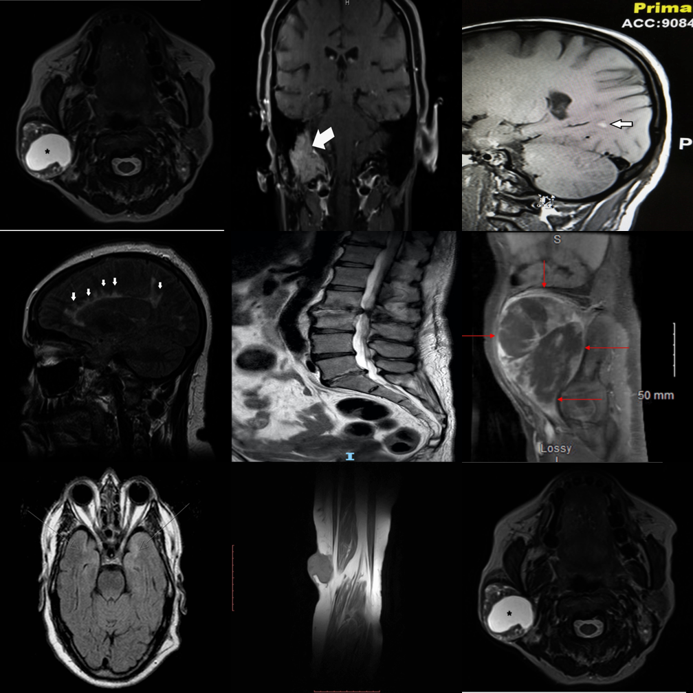
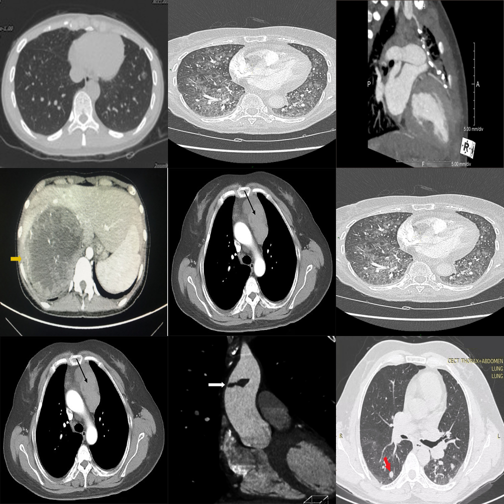
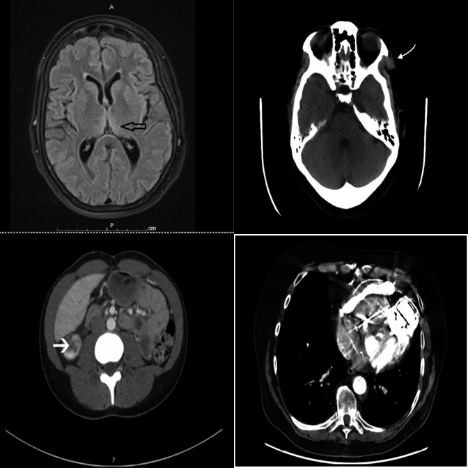

Clinical safety
Wrong body part, flipped images, anatomy/viewpoint mismatches, gross pathology, and device-related cues that should be caught before diagnosis.
Pre-diagnostic visual sanity checking for medical vision-language models
Exposing the Medical Moravec's Paradox in VLMs via clinical triage.
MedObvious asks a question that comes before diagnosis: is the input coherent and safe to interpret? The benchmark isolates input validation as a set-level consistency problem over small multi-panel image sets, with progressive tiers, multiple interfaces, and explicit negative controls.

The ultimate visual outlier detection challenge.
Why this benchmark matters
In clinical practice, interpretation begins with input verification: modality, anatomy, viewpoint/orientation, and basic image integrity must be correct before reasoning about pathology. MedObvious measures this pre-diagnostic gatekeeping ability directly.
This is especially important for multi-image and agentic workflows, where models may operate over multi-view ultrasound, CT/MRI series, or viewer layouts such as 3D Slicer and ITK-SNAP. A single inconsistent panel or slice can invalidate downstream reasoning.
Wrong body part, flipped images, anatomy/viewpoint mismatches, gross pathology, and device-related cues that should be caught before diagnosis.
Synthetic inconsistencies test whether decisions are anchored in visual evidence rather than language priors or report-style completion.
705 tasks contain no outlier, directly measuring false alarms when all panels are internally consistent.
Benchmark design
MedObvious abstracts multi-view clinical workflows into small grids where the model must identify an outlier or correctly answer that none exists.

From basic modality/orientation mismatches to anatomy/viewpoint verification and triage-style failures.
Detection MCQ/Open, Referring MCQ/Open, and Visual Referring expose localization, description, and binary verification behavior.
Designed to reflect multi-view ultrasound, CT/MRI series, and multi-panel viewer interactions where consistency must hold across images.
Five tiers
High-saliency failures such as devices, gross abnormalities, and coherence breaks.

Anatomy and viewpoint mismatches plus integrity violations.

3x3 grids with many distractors stress systematic comparison.

Finer distinctions across sources with broader appearance variability.
Basic orientation and modality mismatches in 2x2 grids.

Results
Across 17 evaluated VLMs, performance remains uneven: false alarms on clean inputs, degradation under larger candidate sets, and strong interface sensitivity persist across model families.
Qwen2.5-VL-7B average accuracy
Qwen2.5-VL-7B on clean, no-outlier grids
Gemini-2.0-Flash
Average accuracy across all tasks
Performance consistently drops when scaling from 2×2 to 3×3, suggesting that many models rely on a few salient cues rather than exhaustive comparison across candidates.
Several models are much stronger on Referring MCQ than on Referring Open, indicating that option selection is easier than grounded description generation.
Some models still collapse on clean grids, showing an “always-find-something” bias that is unacceptable for pre-diagnostic gatekeeping.
| Group | Model | Avg | Neg(-) |
|---|---|---|---|
| General | Qwen2.5-VL-7B | 63.2 | 70.7 |
| Medical | Lingshu-7B | 56.6 | 43.8 |
| Medical (best Neg) | MedGemma1.5-4B-IT | 49.7 | 64.1 |
| Proprietary | Gemini-2.0-Flash | 55.5 | 25.6 |
| Human | Expert | 88.4 | 95.7 |
Qualitative examples
Downloads
Read the full benchmark description, methodology, and evaluation.
Download the short teaser used on the project page.
Update this block with the final author list and venue after review.
@inproceedings{medobvious2026,
title = {MedObvious: Exposing the Medical Moravec's Paradox in VLMs via Clinical Triage},
author = {Anonymous Authors},
booktitle = {TBD},
year = {2026}
}